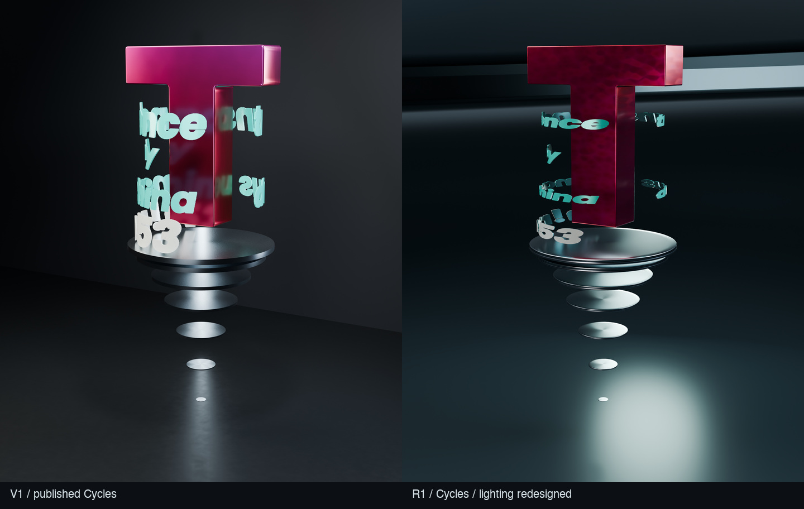
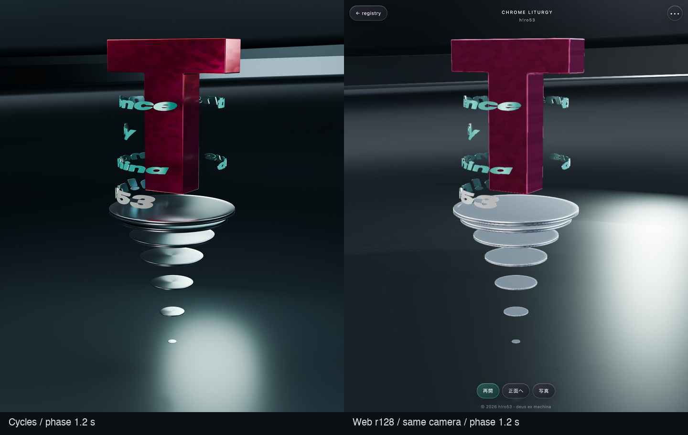
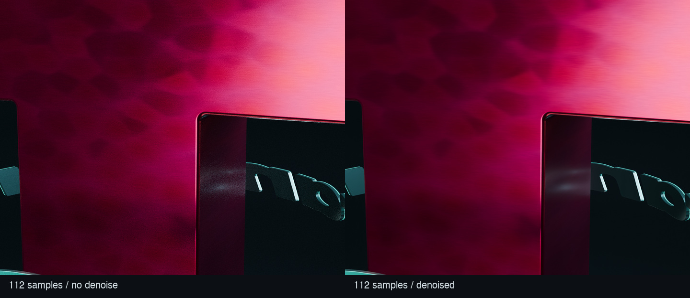
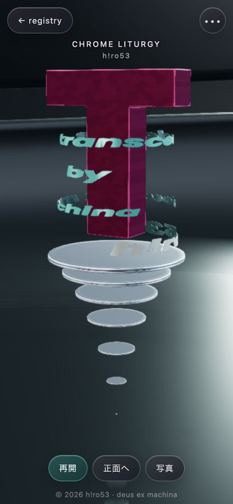
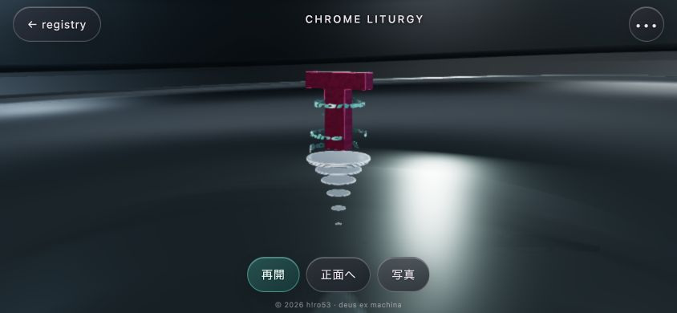

CHROME LITURGY
第一次改修版 · 仮題 · 2026-09-11
Cyberwafer v25の構造と運動を継承し、空間、輪郭、物質と反射を作り直した独立プレビューです。物語設定や物質の正式名称は追加していません。
前後比較
旧公開画像と同じカメラ、近い運動位相。R1は空間・照明を全面的に変更。文字の字面高は原典のUV比率へ戻したため旧版より低く見えます。

CyclesとWeb
同一視点・位相1.2秒。Webにも角度依存色・局所反射・床の反射を実装。スペクトル薄膜、異方性、多重反射、光の広がりは近似で、色や反射幅の差が残ります。

ノイズと細部
同じ112サンプルのデノイズ前後。微細な粒感の一部は平滑化されます。内角の輪郭と材料の方向性は残っています。

縦画面の通常表示
390 × 844 CSS px、DPR 1のChromium表示。iPhone／Safari実機での撮影ではありません。

横画面の通常表示
844 × 390 CSS px。実際のタイトル・操作部の矩形から余白を決めています。
